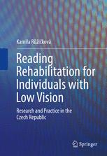

PhDr. Kamila Růžičková, Ph.D. se narodila v Pardubicích dne 12. 3. 1971. Po studiu pedagogiky se již více než 25 let věnuje tématu
rehabilitace osob se zrakovým postižením. Je autorkou řady odborných publikací českých i zahraničních. Zpracovala a výzkumně ověřila
rehabilitační program „Rozvíjení čtenářských dovedností slabozrakých“. Působí jako speciální pedagog na Katedře speciální pedagogiky
a logopedie UHK a ve Speciálně pedagogickém centru pro děti s vadami zraku v Hradci Králové. Ve volném čase se věnuje rodině, ráda
sportuje a čte. Dlouhodobě působí taktéž v KS Mozaika v Hradci Králové jako vedoucí dětských programů.
Specializuje se a své výzkumné a publikační aktivity zaměřuje na oblast edukace a rehabilitace osob se zrakovým postižením.
Pracuje jako odborný asistent na Univerzitě Hradec Králové - Katedře speciální pedagogiky a logopedie. Vyučuje předměty tyflopedie,
Rehabilitace a Speciální pedagogika.
Ve středisku Augustin – poradenském středisku pro studenty se specifickými potřebami UHK
zastává funkci instruktora prostorové orientace a samostatného pohybu osob se zrakovým postižením.
Pracuje ve Speciálně pedagogickém centru pro děti s vadami zraku v Hradci Králové jako speciální pedagog a poradenský pracovník.
Od r. 1991 aktivně pracuje v Křesťanském společenství Mozaika jako vedoucí programů pro děti.
Velmi si váží své rodiny, muže Ivana, 2 synů a 1 dcery.
Životní kréda: „vzácné poklady jsou ukryty hluboko a je třeba je usilovně hledat“ nebo „pokud je to v našich silách, pomozme učinit svět o něco lepším“.